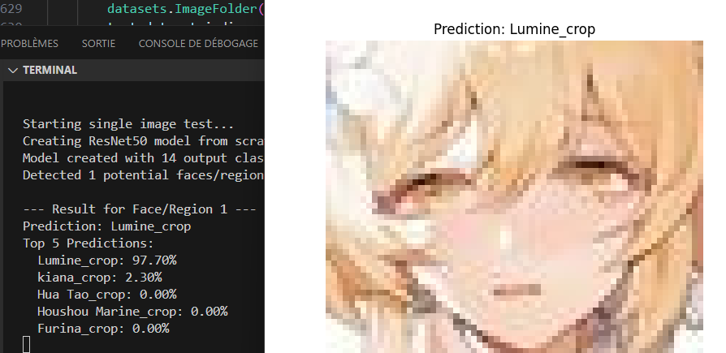
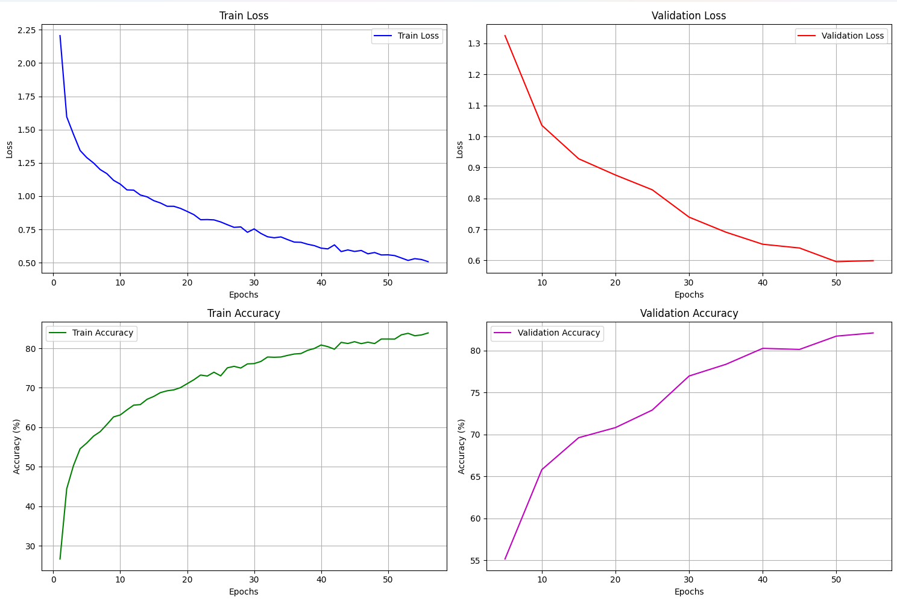
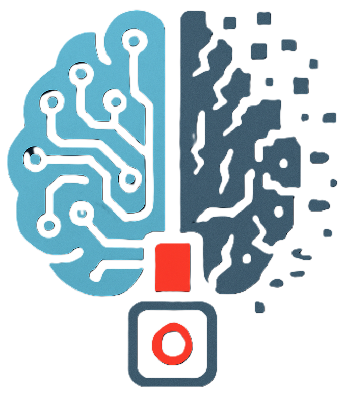

Feel Back
Un Logiciel basé sur l'Intéligence Artificielle qui permet de connaitre l'avis (Positif ou négatif) d'une critique d'un film.

×

×

Description
Ce projet a 2 but principal, premièrement tester les technologie de vectorisation de texte et la technologie d'un Kill switch
Fonctionnalités Clés
📊 Résultat
L'image a été détectée avec une précision de 98 % lors des tests.

🧠 Fonctionnement de l'IA
La convolution extrait des caractéristiques importantes des images en appliquant des filtres pour détecter des motifs comme les bords, les textures et les formes.

📊 Suivis de l'entrainement
Un tableau de bord permettant de visualiser sa progression et d'identifier les points à améliorer.

Technologies Utilisées
-
 Python
Python
-
 Pytorch
Pytorch
-
 Kill Switch
-
 Deep Learning
Deep Learning
-
 Tkinter
Tkinter
-
 Pyinstaller
Pyinstaller
Détails Techniques
- Framework IA : PyTorch
- Interface utilisateur : Tkinter
- Packaging : PyInstaller
- Déploiement : Venv
- Type de modèle : Deep Learning
Statistiques
- Date de début Mai 2025
- Date de fin Mai 2025
- Précision du modèle 95.05%
- Nombre d'époques 100
- Taille du dataset 35,000 critiques
Galerie
×